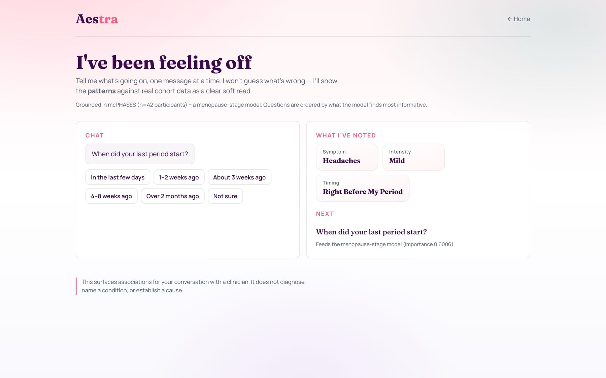
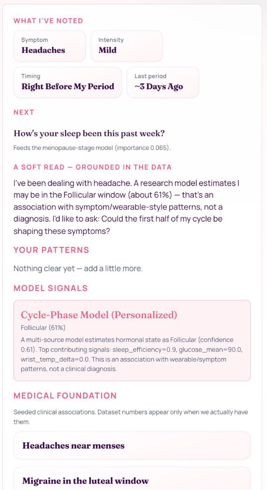
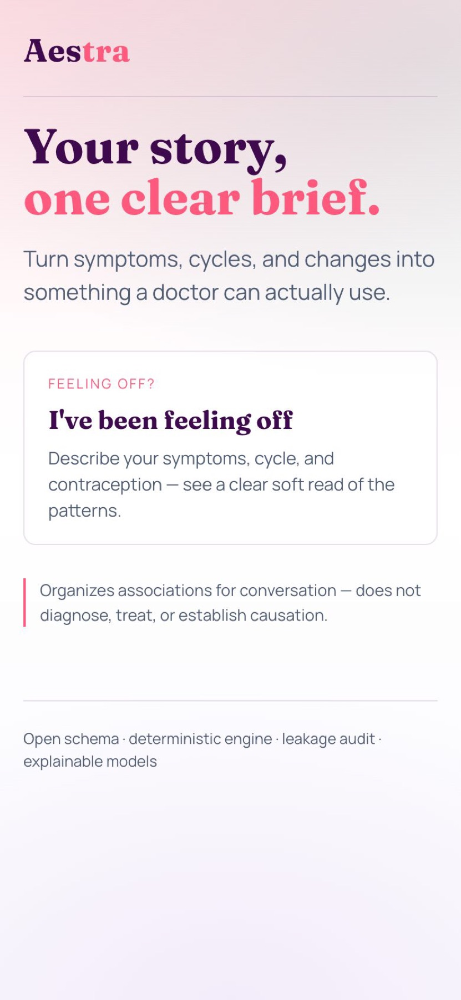

Hackathon · 2026
Aestra
An appointment-ready soft read for women’s hormonal health. Built in a weekend for Hack-Nation.

Context
Years of symptoms, one ten-minute appointment
The Hack-Nation brief was Open AI Infrastructure for Women’s Hormonal Health. It opened with Sarah: 34, years of fatigue, irregular cycles, migraines and brain fog, and several doctors who each saw a snapshot.
Hormones shift with sleep, stress and age, but appointments capture one moment. We wanted Sarah to walk in with something a clinician could actually use.
Concept
Tap, don’t type
Instead of an empty chat box, Aestra asks one question at a time and answers come as chips: symptom, intensity, timing, last period, contraception. Questions are ordered by what the models find most informative, and every answer shows up in a running “what I’ve noted” panel.

Approach
Models estimate, the language model only phrases
A chatbot can summarise a health history, but it can’t reliably rebuild a timeline or keep from inventing findings. So the language model never computes anything.
CycleBench, the deterministic engine underneath, builds the timeline and cycle windows. Specialist models estimate phase and risk, and an evidence graph links each claim to its source. The LLM turns that into plain-language questions to ask the doctor.

Architecture
Every claim traces back to a source
Chips go to a FastAPI endpoint, through the engine, out to the specialist models and the evidence graph, and only then to the phrasing step. A built-in leakage audit rejects any model that peeks at future data, the trick that makes naive models look smarter than they are.

Outcome
Honest numbers, not hype
We shipped a live demo, and reported results as they were:
- PCOS-risk model at 0.86 balanced accuracy
- Hormonal-state model at 0.28, reported as barely above chance
- 10 leakage and safety assertions in the audit
- About 78 tests, all reproducible offline without API keys

Made at Hack-Nation
Team
Product, frontend, integration
Luke P.F. Pons
Model-pFL
Hamza
Built on
Data
mcPHASES, NHANES, Kaggle PCOS
Stack
Python, FastAPI, scikit-learn, PyTorch